Cycle Wars: The Rise of Otto Cycles
Introduction
Cycle Wars: The Power Awakens
- Introduced the common air-standard cycles
- Analyzed the Carnot cycle
Cycle Wars: The Rise of Otto Cycles
- Analyzes
- The Otto cycle
- The Diesel cycle
- The Ericsson cycle
- The Stirling cycle
- The Brayton cycle
- The turbojet engine cycle
Carnot (IE, IT, IE, IT) Review

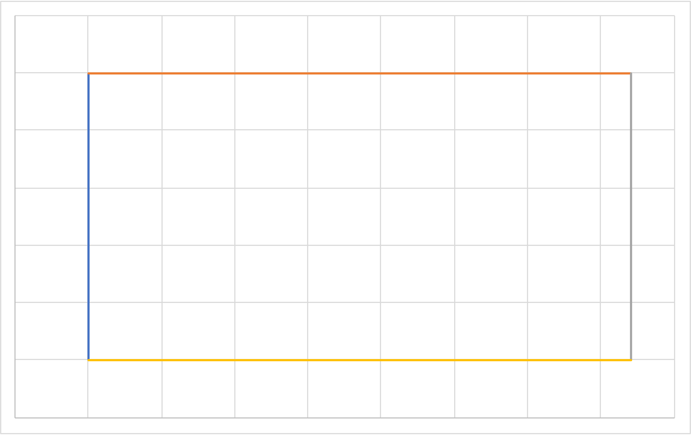
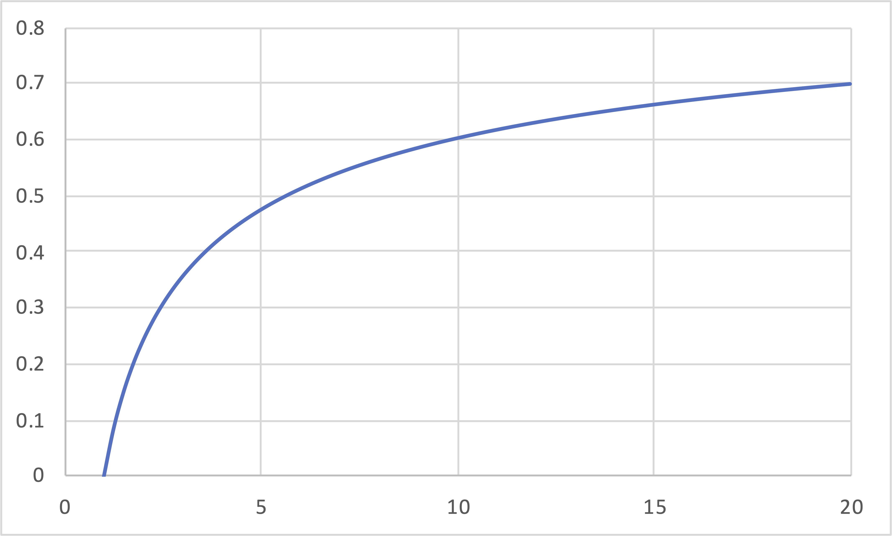
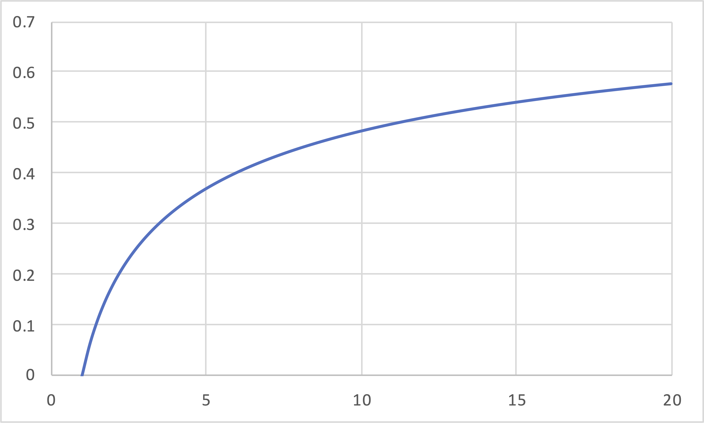
Otto (IE, IC, IE, IC)
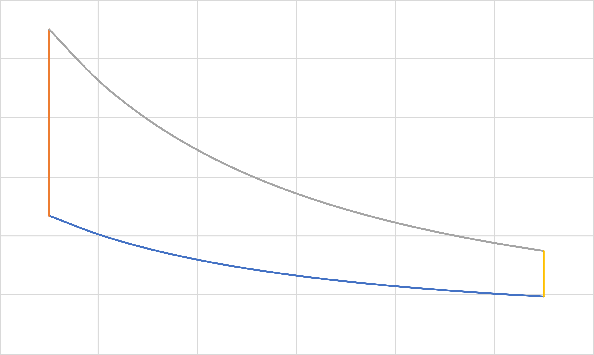
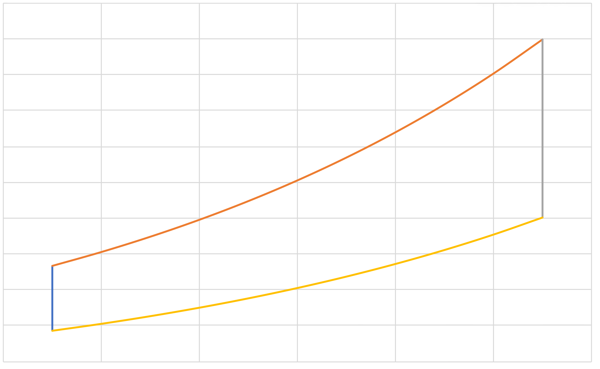
\[\eta=\frac{|Q_\mathrm{hot}|-|Q_\mathrm{cold}|}{|Q_\mathrm{hot}|}=1-\frac{|Q_\mathrm{cold}|}{|Q_\mathrm{hot}|}\]
\[Q_\mathrm{hot}=C_v\left(T_a-T_d\right)\]
\[Q_\mathrm{cold}=C_v\left(T_c-T_b\right)\]
\[\eta=1-\frac{T_b-T_c}{T_a-T_d}=1-\frac{T_c}{T_d}=1-r^{(1-\gamma)}\]
\[W_{\rm{net}}=-\left(Q_\mathrm{hot}+Q_\mathrm{cold}\right)=C_v\left[\left(T_b+T_d\right)-\left(T_a+T_c\right)\right]\]
Otto (IE, IC, IE, IC)(cont.)
\[\eta = 1 - \frac{T_\mathrm{c}}{T_\mathrm{d}} = 1 - r^{(1-\gamma)} \]
Diesel (IE, IB, IE, IC)
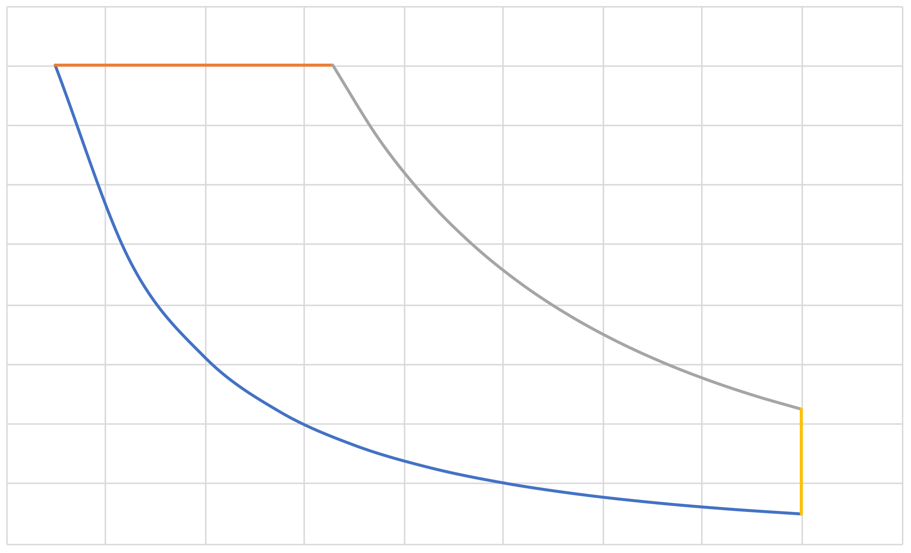
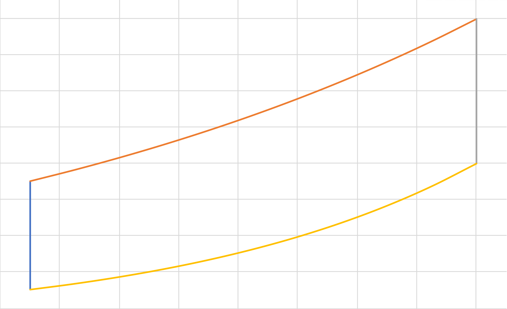
\[\eta=1+\frac{Q_\mathrm{cold}}{Q_\mathrm{hot}}=1+\frac{C_v\left(T_c-T_b\right)}{C_p\left(T_a-T_d\right)}\]
\[=1+\frac{1}{\gamma}\frac{\left(T_b-T_c\right)}{\left(T_a-T_d\right)}\]
\[Q_\mathrm{hot}=Q_2 = C_p\left(T_a-T_d\right)\]
\[Q_\mathrm{cold}=Q_4 = C_p\left(T_c-T_b\right)\]
\[r_e \equiv \frac{V_b}{V_a}\]
\[r \equiv \frac{V_c}{V_d}\]
\[W_{\rm{net}}=-\left(Q_\mathrm{hot}+Q_\mathrm{cold}\right)=C_p\left[\left(T_d-T_a\right)+\left(T_b-T_c\right)\right]\]
Diesel (IE, IB, IE, IC)(cont.)
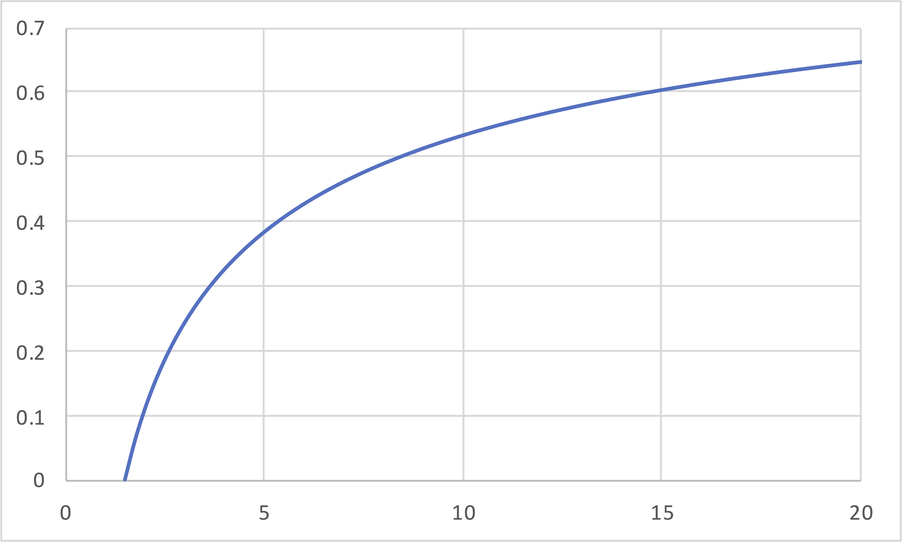
\[\eta = 1 - \frac{1}{\gamma}\left[\frac{\left(\frac{1}{r_e}\right)^{\gamma-1}-\left(\frac{r_e}{r}\right)\left(\frac{1}{r}\right)^{\gamma-1}}{1-\frac{r_e}{r}}\right]\]
\[= 1 - \frac{1}{\gamma}\left[\frac{\left(\frac{1}{r_e}\right)^{\gamma-1}-\left(\frac{1}{r}\right)^\gamma}{\frac{1}{r_e}-\frac{1}{r}}\right]\]
\[r \equiv \frac{V_c}{V_d}\]
\[r_e \equiv \frac{V_b}{V_a}\]
Graph is for \(r_e = 0.5 r\)
Brayton (IE, IB, IE, IB)
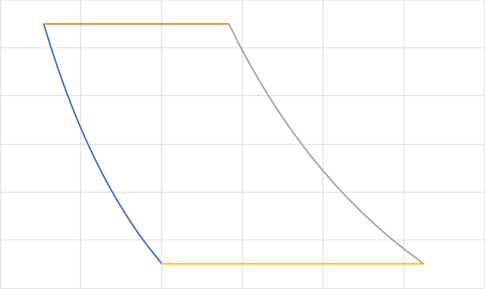
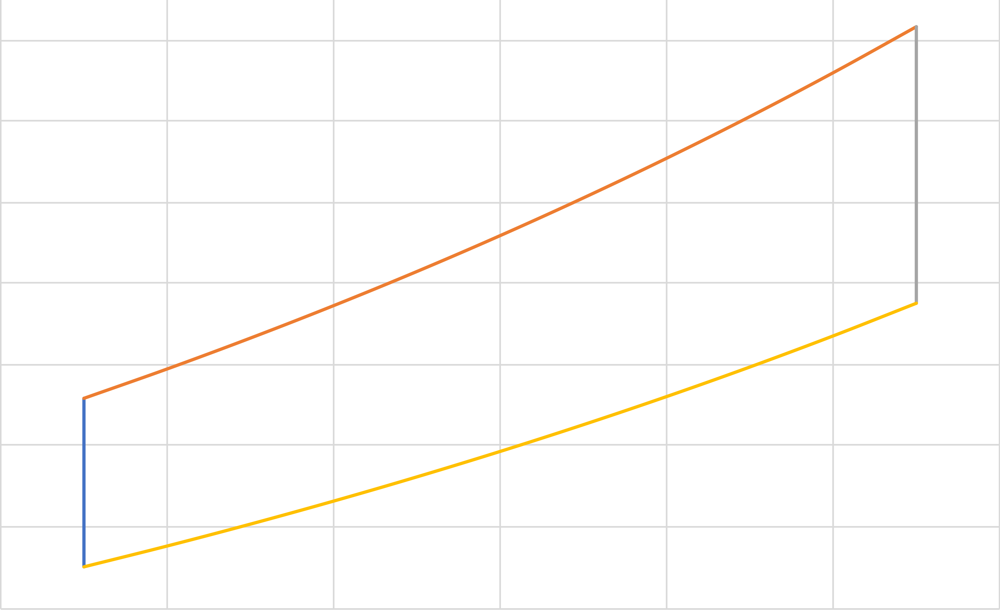
\[\eta=1-\frac{|Q_\mathrm{cold}|}{|Q_\mathrm{hot}|}=1+\frac{\left(T_d-T_a\right)}{\left(T_c-T_b\right)}\]
\[=1-\frac{T_a}{T_b}=1-r_P^{\frac{1-\gamma}{\gamma}}\]
\[Q_\mathrm{hot}=Q_2 = C_p\left(T_c-T_b\right)\]
\[Q_\mathrm{cold}=Q_4 = C_p\left(T_d-T_a\right)\]
\[W_{\rm{net}}=-\left(Q_\mathrm{hot}+Q_\mathrm{cold}\right)=C_p\left[\left(T_b+T_d\right)-\left(T_a+T_c\right)\right]\]
Brayton (IE, IB, IE, IB)(cont.)
\[\eta = 1 - r_P^{\left(\frac{1-\gamma}{\gamma}\right)}\]
Brayton With Regenerator (IE, IB, IE, IB)
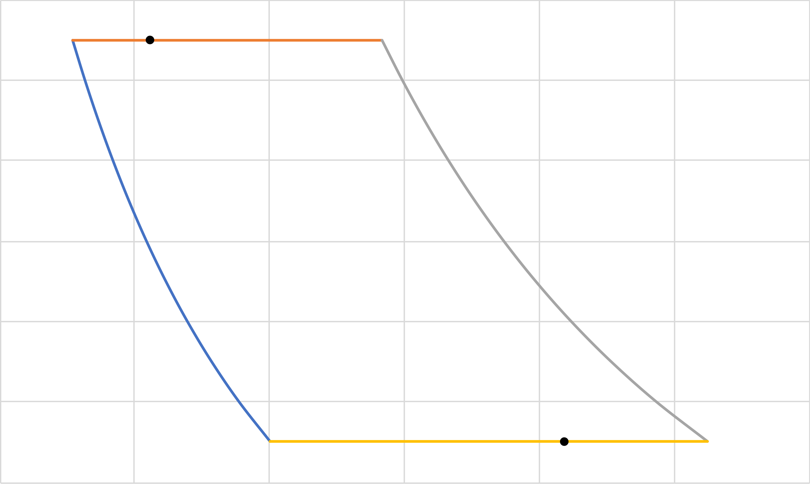
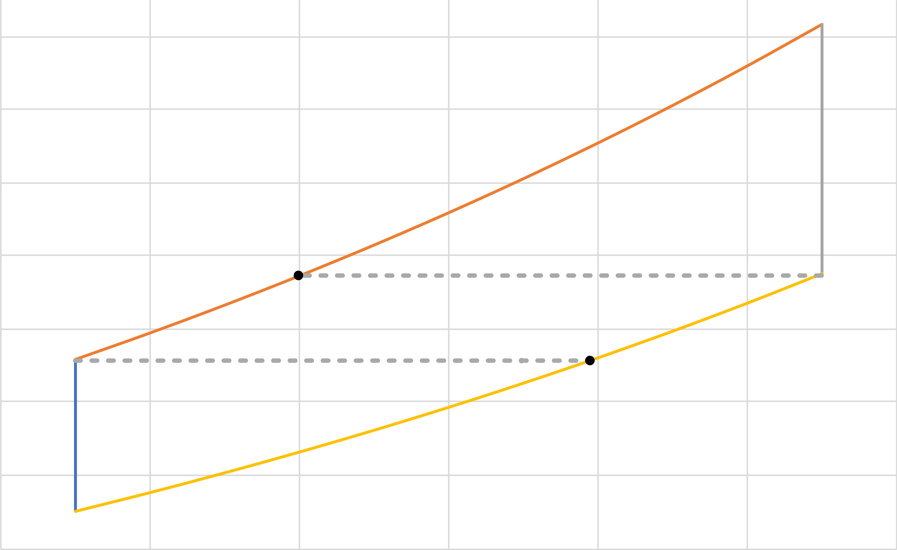


\[Q_\mathrm{hot}=C_p\left(T_c-T_x\right)\]
\[W_{\mathrm{net}}=W_{\mathrm{turb}}+W_{\mathrm{comp}}\]
\[-W_{\mathrm{turb}}=- \Delta H = C_p\left(T_c-T_d\right)\]
With an ideal regenerator, \(T_d = T_x\).
\[Q_\mathrm{hot}=-W_{\mathrm{turb}}\]
\[\eta=\frac{|W_{\mathrm{turb}}+W_{\mathrm{comp}}|}{Q_\mathrm{hot}}=1-\frac{|W_{\mathrm{comp}}|}{|W_{\mathrm{turb}}|}\]
\[\eta=1+\frac{T_b-T_a}{T_c-T_d}=1-\frac{T_a}{T_c}\left(\frac{P_b}{P_a}\right)^{\frac{\gamma-1}{\gamma}}\]
Turbojet (IE, IB, IE, IE IB)
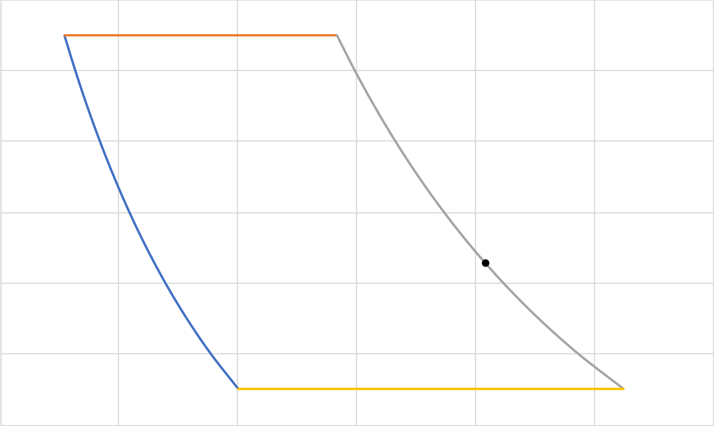
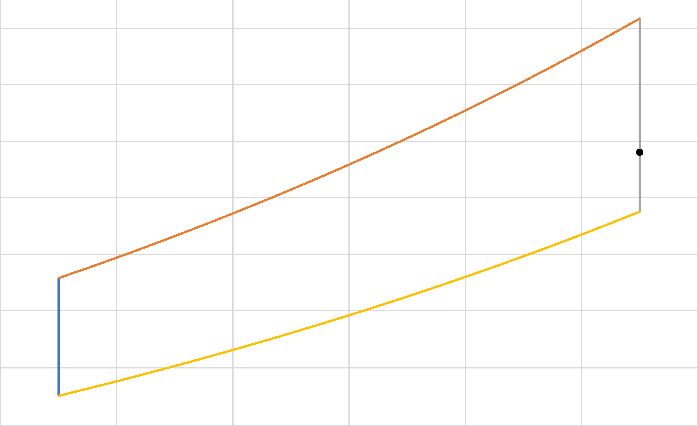
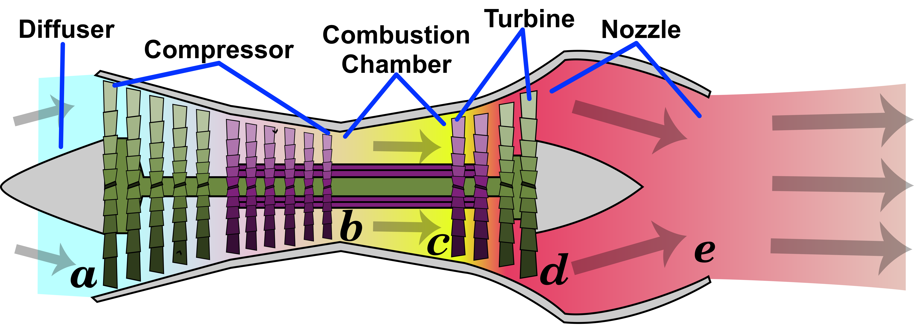
Raminagrobis, CC BY 4.0, via Wikimedia Commons
\(\ \ \ \ |W_1|=|W_3|\) Just enough to drive
\(\ \ \ \ W_1=C_p\left(T_b-T_a\right)\)
\(\ \ \ \ Q_2=C_p\left(T_c-T_b\right)\)
\(\ \ \ \ W_3=C_p\left(T_d-T_c\right)\)
Turbojet (IE, IB, IE, IE IB)(cont.)
Raminagrobis, CC BY 4.0, via Wikimedia Commons
\(\ \ \implies C_p\left(T_b-T_a\right)=C_p\left(T_c-T_d\right)\)
\(\ \ \ \ T_d=T_c+\left(T_a-T_b\right)\)
\(\ \ \ \ \Delta \hat{H} + \frac{\Delta (u^2)}{2}=0\)
\(\ \ \ \ d\hat{H}+udu=0\)
\(\ \ \ \ d\hat{H} = Td\hat{S} +\hat{V}dP\)
For isentropic \((\Delta S = 0)\)
\(\ \ \ \ \hat{V}dP+udu=0\)
\[\ \ \ \ \int_{u_d}^{u_e} udu=- \int_{\hat{V}_d}^{\hat{V}_e} \hat{V}dP\]
\[\text{ also }P\hat{V}^{\gamma}=\text{const.}\]
\[u_e^2-u_d^2=\frac{2\gamma P_d \hat{V}_d\ (\text{or }RT_d)}{\gamma-1}\left[1-\left(\frac{P_e}{P_d}\right)^{\frac{\gamma-1}{\gamma}}\right]\]
\[\frac{T_e}{T_d}=\left(\frac{\hat{V}_d}{\hat{V}_e}\right)^{\gamma-1}=\left(\frac{P_e}{P_d}\right)^{\frac{\gamma-1}{\gamma}}\]
Ericsson (IT, IB, IT, IB)

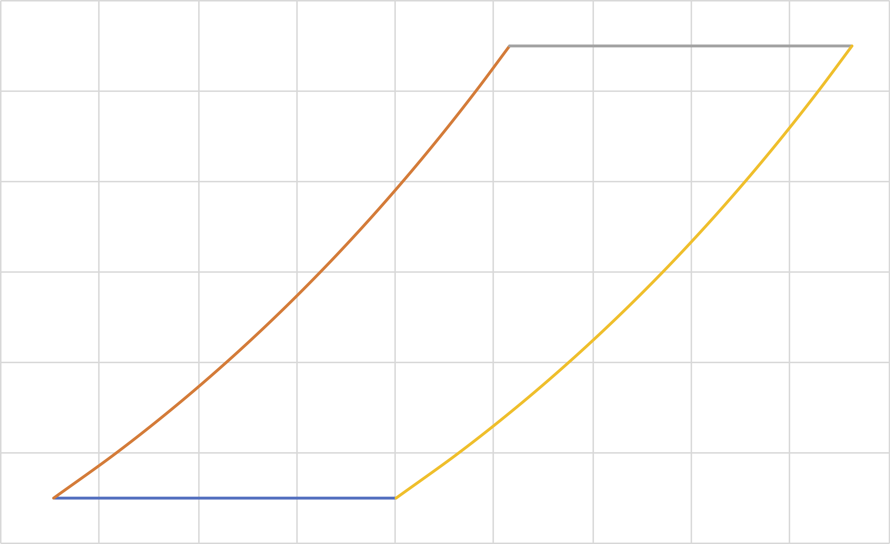
\[Q_1=-W_1=RT_a \ln \frac{P_a}{P_b}\]
\[Q_3=-W_3=RT_c \ln \frac{P_c}{P_d}\]
\[Q_2=\Delta \hat{H}_2=C_p\left(T_c-T_b\right)\]
\[Q_4=\Delta \hat{H}_4=C_p\left(T_a-T_d\right)=-C_p\left(T_c-T_b\right)\]
\[W_2=- P_2 \Delta \hat{V}_2=-P_b\left(\hat{V}_c-\hat{V}_b\right)\]
\[W_4=-P_d\left(\hat{V}_a-\hat{V}_d\right)\]
Ericsson (IT, IB, IT, IB)(cont.)
\[W_{\mathrm{net}}=-R\left(T_3-T_1\right)\ln \frac{P_2}{P_4}\]
\[Q_\mathrm{hot}=C_p \left(T_1-T_3\right)+RT_3\ln \frac{P_2}{P_4}\]
\[\eta=\frac{R\left(T_3-T_1\right)\ln \frac{P_2}{P_4}}{C_p\left(T_1-T_3\right)+RT_3 \ln \frac{P_2}{P_4}}\]
Note that \(|Q_2|=|Q_4|\)
If we could use a perfect heat exchanger between Steps 2 and 4
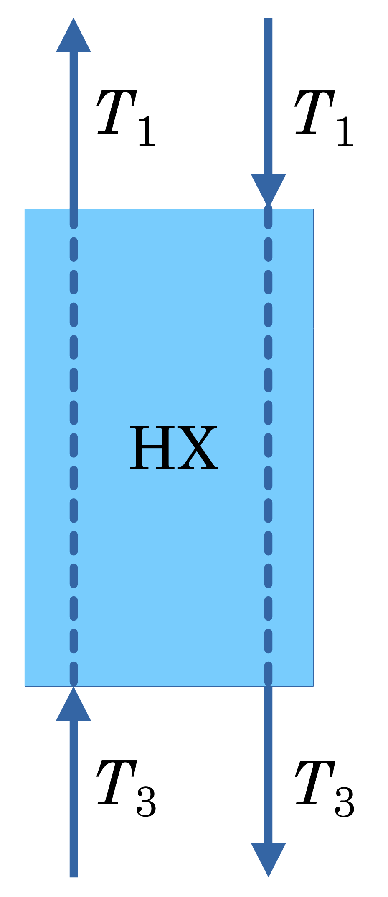
\[\eta=\frac{R\left(T_3-T_1\right)\ln \frac{P_2}{P_4}}{RT_3 \ln \frac{P_2}{P_4}}=1-\frac{T_1}{T_3}\]
Stirling (IT, IC, IT, IC)
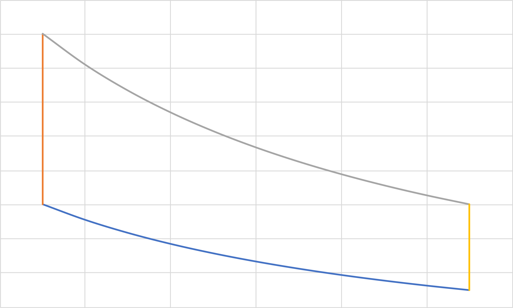
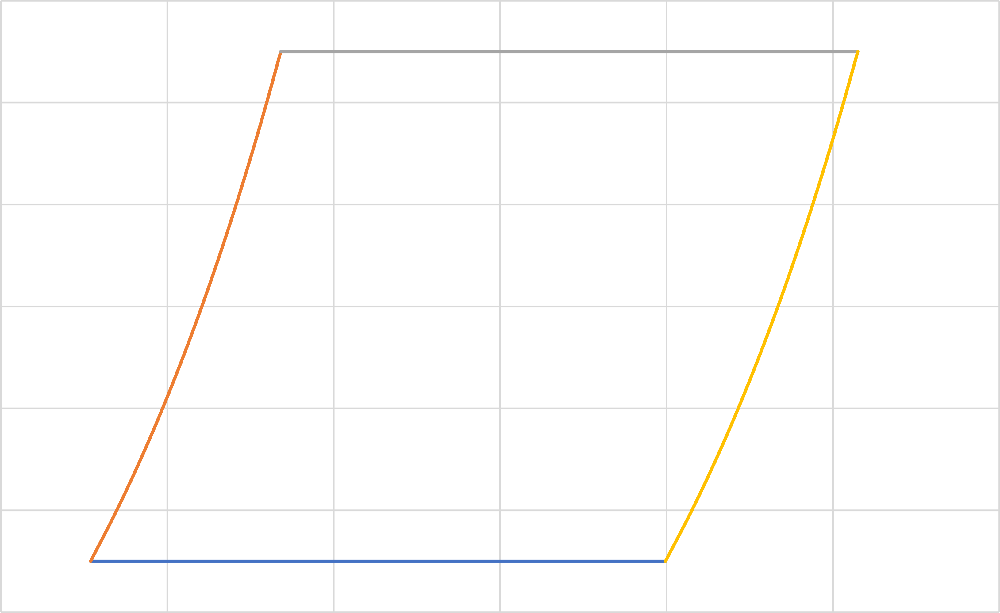
Similar to the Ericsson cycle
\[W_{\mathrm{net}}=-R\left(T_3-T_1\right)\ln \frac{P_b}{P_a}\]
\[Q_\mathrm{hot}=C_v \left(T_3-T_1\right)+RT_3\ln \frac{P_b}{P_a}\]
\[Q_4=C_v \left(T_1-T_3\right)\]
For perfect HX between Steps 2 and 4
\[\eta=\frac{R\left(T_3-T_1\right)\ln \frac{P_b}{P_a}}{RT_3 \ln \frac{P_b}{P_a}}=1-\frac{T_1}{T_3}\]
The Takeaways
- The Otto cycle is the thermodynamic model for the internal-combustion automobile engine.
- The Diesel cycle is the thermodynamic model for the internal-combustion Diesel engine.
- The Brayton cycle is the thermodynamic model for the internal-combustion gas-turbine engine.
- The Turbojet cycle is the thermodynamic model for the internal-combustion turbojet engine.
- The Ericsson and Stirling cycles have not found wide commercialization, but hold promise for high thermal efficiency.
Thanks for watching!
The previous video in the series is in the link in the upper left. The next video in the series is in the upper right. To learn more about Chemical and Thermal Processes, visit the website linked in the description.